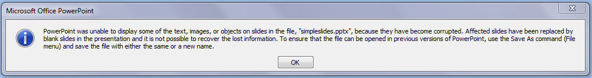

Slidinator requires a specific environment and input.
Requirements
Slidinator runs on DITA-OT 1.7.5 or later. It requires other DITA-OT plugins for
success.
- org.slidinator.doctypes
- org.dita-community.common.xslt
- org.dita4publishers.common.xslt
- org.dita4publishers.common.mapdriven
Note: If running the plugin from </oXygen>, make sure that you turn off support for RNG
attribute defaulting.
Limitations
At the time of this writing, there are a number of things that cause the output to be less
than optimal. Keep these in mind when providing input to the plugin.
- Emulating two-columns with tables in the source results in output that appears garbled.
Avoid tables in the source.
- Images in the source may get dropped when you open PowerPoint. You will get the warning
indicated by this message.  Dropped images that are the only thing on a slide are indicated by blank slides.
The only solution is to insert the image in PowerPoint.
- Slidinator cannot determine the font-size of the output and will not split the content
across slides. Whatever text is in a topic will be output to a single slide. You will have
to make adjustments manually.
- Paragraphs are handled as if they are unbulleted list items.
 - Trial Edition
- Trial Edition